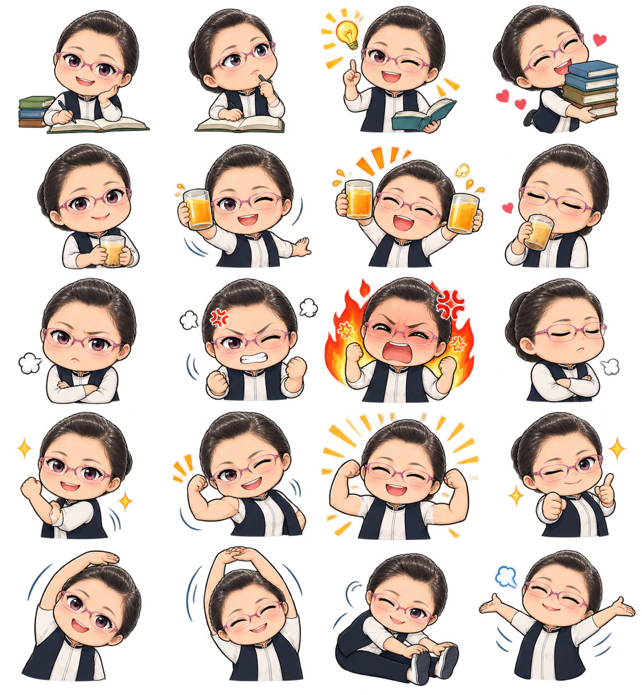

日常角色與表情
以同一角色延伸不同生活情境，讓日常心情有自己的表達方式。
每一張貼圖，都是一個想法的開始。從個人創作到教學分享，透過 AI 探索更多創作可能，讓原本複雜的流程變得更容易，也讓作品走進生活，成為人與人之間交流的橋梁。

一個創作想法，可以從自己開始，也可以成為帶領別人探索創作的起點。從日常生活出發，將熟悉的表情與情境變成專屬貼圖。
讓生活中的表情與情境，成為可以分享的創作。
PEI'S CREATIVE JOURNEY收藏每一個創作想法，看看貼圖如何呈現不同心情。點選圖片可以放大欣賞，也可以前往 LINE 查看作品。
以同一角色延伸不同生活情境，讓日常心情有自己的表達方式。
透過姿勢、表情與裝飾效果，呈現更多元的情緒和互動。
讓角色以更完整的畫面呈現，為貼圖互動帶來不同體驗。
加入生活用語與情境，讓角色替日常對話傳遞心意。
保留角色特色，透過不同表情與動作表達各種心情。
不同形式的貼圖，讓創作從靜態圖像延伸到動態與全螢幕呈現。
從角色、表情與生活情境開始，將熟悉的想法轉化成貼圖。
讓角色有了連續動作，從單張表情延伸成更有節奏的表達。
因學生積極樂學而進一步嘗試，讓課程有了新的延伸。
從使用者角度思考，將主題選擇、提示詞、圖片處理與貼圖規格整理成更容易理解的流程。
好的流程設計，是讓使用者能夠更容易完成想做的事。
提供主題選項與提示詞，協助學生整理創作方向，降低開始創作的門檻。
將一張大圖中的多個貼圖情境分割、去背，再整理成個別素材。
從貼圖類型選擇到動畫影格規劃，將較複雜的步驟整理成清楚的操作流程。
科技不只是工具，也能讓人與人之間的互動更有溫度。
「數位也能拉近人與人之間的關係，產生好的互動。」
PEI｜創作體悟讓創作從一個想法開始，讓溫度在每一次分享中延續。
以下保留原始心得內容；未作改寫，未回答的 X 欄位不列入。
為什麼想設計這組貼圖？以自己為例設計貼圖，想要帶領學生設計貼圖；也有以家人為例設計貼圖，想要給家人用。選擇的貼圖主題情境是與生活、工作有關，可以在日常生活使用。
從一個想法到一組會動的貼圖。 創作過程： 從靜態貼圖、動態貼圖到全螢幕貼圖，經歷了哪些創作階段？為了方便30+大學學生設計網頁，製作網站提供主題選項，讓同學方便取得提示詞，又考量到AI免費帳號生圖的限制，需要一張大圖生成多張貼圖情境，後續需要做分割、去背的動作，以及上架貼圖之相關大小、動態規定等限制，為了簡化流程，方便大家設計 印象深刻： 哪一種貼圖的製作最讓你印象深刻？為什麼？全螢幕貼圖，因為貼圖會佔滿整個螢幕，原本思考這種貼圖需利用line creator market上架較複雜且創作人自己創作的貼圖也需要購買，而未規劃教學內容中，但因同學的積極樂學，而加入嘗試，帶入課程， 挑戰突破： 創作過程遇到什麼困難？如何運用 AI 解決問題？教學過程中，網站的使用需要依使用者使用情況，進行即時調整，還好有AI，可以加速調整。
從不熟悉到完成作品，我學會了什麼？為了使用者方便，需將過程步驟化，簡單化，學會了從使用者角度，不便優化流程設計。 自我突破： 完成作品後，最有成就感的是什麼？看到同學們一個個產出作品，也跟我分享，家人看到作品的一些溫馨互動，覺得很開心 未來應用： 這次學到的 AI 技能，未來還可以應用在哪些地方？也教同學們設計網站，依需求來設計網站。
作品分享： 第一次將貼圖分享給家人或朋友時，他們有什麼反應？大家都覺得很驚艷 創作體悟： 透過這次經驗，對科技、創作與人際互動有什麼新的感受？數位也能拉近人與人之間的關係，產生好的互動。